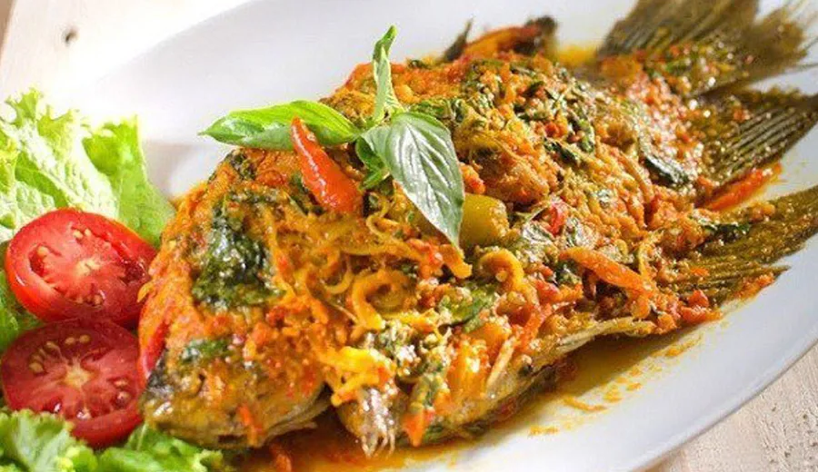

Tentang
Halo Fooders!!
Selamat datang di Website Kuliner Toba! Website ini merupakan
website yang
bertujuan untuk membantu kamu mencari rekomendasi makanan yang ada di Toba. Ketika kamu butuh makanan
fastood
kamu bisa mendapatkan rekomendasi dari website ini. Selain itu masih banyak lagi rekomendasi lainnya
loh,
seperti makanan khas Toba, Junkfood, Chinese Food dan juga Street Food. Untuk para anak-anak muda yang
suka
jajanan cocok banget nih kalian bisa kunjungin website ini berkali-kali, tanpa adanya bayaran ataupun
batas
aksesnya.
Kamu juga bisa menyesuaikan waktu kamu untuk pergi kulineran, karena jam buka dan tutupnya
juga
sudah dicantumkan. Pada website ini juga akan tersedia kontak dari para anggota tim, jadi kalau kamu
ingin
menghubungi para tim tentang website ini bisa juga loh. Untuk kalian semua jangan lupa eksplore makanan
yang
ada
di Toba yaa!!
Ringkasan

Masakan Batak adalah jenis masakan yang dipengaruhi seni dan tradisi memasak suku Batak yang mendiami wilayah Sumatra Utara, Indonesia. Masakan Batak merupakan salah satu jenis masakan Nusantara. Salah satu ciri masakan batak adalah kegemarannya menggunakan andaliman (Zanthoxylum acanthopodium) sebagai rempah utama. Karena itulah Andaliman kadang dijuluki sebagai "Merica Batak".
Kafe terutama bertujuan untuk menjual kopi - kopi enak, berbagai jenis kopi - dan hal-hal yang cocok dengan kopi, seperti sandwich ringan, kue, sarapan, dan makanan ringan; juga, berbagai minuman serta teh, untuk orang yang tidak suka kopi. Restoran fokus untuk menjual seluruh makanan kepada Anda.


Apa yg dimaksud Chinese Food? Masakan Tionghoa adalah kuliner yang dihasilkan oleh orang Tionghoa, baik yang ada di Tiongkok, maupun yang ada di perantauan, termasuk di Indonesia. Istilah masakan Tionghoa di Tiongkok daratan juga mengacu kepada variasi dari seluruh suku bangsa, agama dan tradisi yang berkembang di negara tersebut.
Apa yg dimaksud dengan street food? Street food atau dalam Bahasa Indonesia dapat diartikan sebagai kaki lima adalah jasa penyajian makanan (food and beverages atau F&B) secara terbuka oleh warung atau gerobak di tempat publik seperti jalanan. Biasanya street food menyajikan makanan siap santap yang praktis dikonsumsi di jalan.